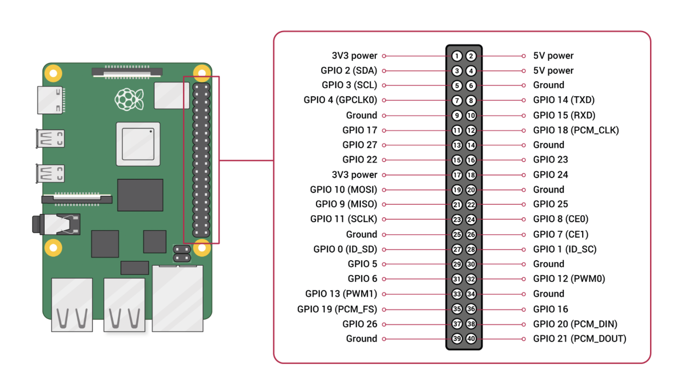

学习笔记 ｜ 树莓派 Rust 嵌入式操作系统 之 驱动：GPIO 和 UART
作者：张汉东
学习笔记系列在线阅读地址：https://zhanghandong.github.io/raspberrypi-os-tutorials-notes/
这是我对官方 Operating System development tutorials in Rust on the Raspberry Pi 的学习笔记。以此来学习 Rust 裸机（Bare-Matel）编程。
学习笔记代码仓库：https://github.com/ZhangHanDong/raspberrypi-os-tutorials-notes，欢迎反馈交流。
注意：如果需要动手实现，请使用官方教程源码仓库配合本学习笔记。
当前已更新：
- ARM 汇编基础
- 00: 准备工作
- 01: 循环等待
- 02: 初始化执行环境（runtime）
- 03: 硬核输出 Hello World
- 04: 安全访问全局数据结构
- 05: 驱动：GPIO 和 UART
本文节选第五章内容。
驱动：GPIO 和 UART
注意：这章不支持
BSP=rpi4 make qemu。
一些前置知识
Arm 物理内存 vs Arm 虚拟地址空间
Arm 与物理内存等外设统一编址在4GB(32位)的地址空间中。而 x86 是将内存单独编址在一个地址空间，外设I/O端口在另外的地址空间，要访问IO地址空间需要用专门的指令操作。
Linux的每个进程都有4GB的虚拟地址空间，其中1~3GB是每个进程独占的用户空间，3GB~4GB是所有进程共享的内核空间（0xC0000000~0xFFFFFFFF）。因此虚拟地址空间包括内核空间与用户空间。linux的实虚地址的转换就是有MMU通过页表的形式完成转换的。
Arm 虚拟地址空间布局是一个标准的linux kernel实现，地址空间被分割成 1G 内核空间和 3G 用户空间，内核空间地址范围为0xC0000000 - 0xEFFFFFFF, 用户空间地址范围为 0x00000000 - 0xBFFFFFFF。
通过操作内存来访问外设，这种方式称为 memory-mapped IO。
需要注意：外设(Peripherals)的物理地址空间为 0x20000000+16MB，一般在内核虚拟地址中被映射到0x7E000000+16MB。
树莓派 4b bcm 2711 文档中描述了ARM所见地址之间的映射：
rpi4: 0xFE200000 - 0xFE2000b3 : gpio@ 0x7E200000
只需把 fe200000 减去GPIO-BaseAddr（0x00200000），就可获得树莓派的PeripheralBaseAddr（PBase）：0xFE000000。
GPIO 与 UART
在学习这一章之前，还是需要一些前置知识的。对树莓派如果不了解的话，很难理解它的代码在做什么。这部分内容，如果你暂时不想看，或者已经了解过，可以跳过。需要的时候可以回头看看。
GPIO（General Purpose I/O Ports）意思为通用输入/输出端口，通俗地说，就是一些引脚，可以通过它们输出高低电平或者通过它们读入引脚的状态-是高电平或是低电平。GPIO是个比较重要的概念，用户可以通过GPIO口和硬件进行数据交互(如UART)，控制硬件工作(如LED、蜂鸣器等),读取硬件的工作状态信号（如中断信号）等。GPIO口的使用非常广泛。掌握了GPIO，差不多相当于掌握了操作硬件的能力。
以树莓派 4B 为例，其 40 针脚见下图:

UART（Universal Asynchronous Receiver/Transmitter)，是一种串行通信协议，其中数据是串行传输的，一次传输一个字节的数据，即逐位传输。作为把并行输入信号转成串行输出信号的芯片，UART 通常被集成于其他通讯接口的连结上。
为了和树莓派串口通信，我们将树莓派的 UART 针脚连接到个人电脑（下面简称 PC）上。
UART 的端口至少有 RX、TX 和地线三个针脚。RX 负责读取，TX 负责输出。如果有两个 UART 端口，它们的连接方式如下：

注意这里是：usb2ttl(RXD) <-> gpio(TXD) 以及 usb2ttl(TXD) <-> gpio(RXD)。另外注意，不要连接usb2tt 上的电源线到树莓派，小心烧坏树莓派。
uart 协议层
协议层中，规定了数据包的内容，它由起始位、主体数据、校验位以及停止位组成，通信双方的数据包格式要约定一致才能正常收发数据 。
- 波特率：异步通信中由于没有时钟信号，所以2个通信设备需约定好波特率，常见的有4800、9600、115200等。
- 通信的起始和停止信号：串口通信的一个数据包从起始信号开始，知道停止信号结束。数据包的起始信号由一个逻辑0的数据位表示，而数据包的停止信号可由0.5、1、1.5或2个逻辑1的数据位表示，只要双方约定一致即可。
- 有效数据：在数据包的起始位之后紧接着的就是要传输的主体数据内容，也称为有效数据，有效数据的长度常被约定为8位或9位长。
- 数据校验：在有效数据之后，有一个可选的数据校验位。由于数据通信相对容易受到外部干扰导致传输数据出现偏差，可以在传输过程加上校验位来解决这个问题。校验方法有奇校验(odd)、偶校验(even)、0校验(space)、1校验(mark)以及无校验(noparity)。
- 奇校验要求有效数据和校验位中“1”的个数为奇数，比如一个 8 位长的有效数据为：01101001，此时总共有 4 个“1”，为达到奇校验效果，校验位为“1”，最后传输的数据将是 8 位的有效数据加上 1 位的校验位总共 9 位。偶校验与奇校验要求刚好相反，要求帧数据和校验位中“1”的个数为偶数，比如数据帧：11001010，此时数据帧“1”的个数为 4 个，所以偶校验位为“0”。0 校验是不管有效数据中的内容是什么，校验位总为“0”，1 校验是校验位总为“1”
uart 波特率计算
公式：

其中，fck为 USART 时钟， USARTDIV 是一个存放在波特率寄存器(USART_BRR)的一个无符号定点数。其中 DIV_Mantissa[11:0]位定义 USARTDIV 的整数部分，DIV_Fraction[3:0]位定义 USARTDIV 的小数部分。
例如：DIV_Mantissa=24(0x18)，DIV_Fraction=10(0x0A)，此时 USART_BRR 值为0x18A；那么USARTDIV的小数位10/16=0.625；整数位24，最终USARTDIV的值为24.625。
波特率的常用值有 2400、9600、19200、115200。
如何设定寄存器值得到波特率的值?
假设：串口设置为961200 8N1，即 波特率为 961200，8数据位，N表示没有校验位，1位停止位。
而在内核 config.txt中将时钟设置为 48MHZ（init_uart_clock=48000000）。
那么波特率（baud）计算为: (48_000_000 / 16) / 921_600 = 3.2552083。这意味着整数部分（DIV_Mantissa）为3，小数部分是0.2552083。
根据PL011技术参考手册进行的 DIV_Fraction计算： INTEGER( (0.2552083 * 64) + 0.5 ) = 16。INTEGER代表取整。
因此生成的波特率分频器（baud rate divider）为 3 + 16/64 = 3.25，那么生成的波特率是48_000_000 / (16 * 3.25) = 923_077。误差率为 ((923_077 - 921_600) / 921_600) * 100 = 0.16%。
那么反过来，如果想用波特率为 115200 8N1，则：
- 整数部分：
(48000000/16)/115200 = 26.0416666667。 - 小数部分：
INTEGER((0.0416666667 * 64) + 0.5) = 3
设置正确的波特率比较重要。
树莓派启动流程
树莓派在设计的时候，为了节省成本，没有使用掉电非易失性存储介质，也就在板子上不能找到相关的flash。这样芯片启动的程序只能放在sd卡里面了。本来U盘启动也是一种方式，但是树莓派4代之前的设计并不是很好，导致这种启动方式不可以使用。树莓派4也有一些尝试，但是目前树莓派4最主流的方式还是使用SD卡启动。
Raspberry Pi 4具有一个SPI连接的EEPROM（4MBits / 512KB）。其中包含用于启动系统的代码，并替换了先前在SD卡的启动分区中找到的bootcode.bin。如果你的树莓派4通电了但是一直无法启动系统，且绿灯常亮不闪，需要检查两种情况：
- 有没有插入 sd 卡。
- 如果有sd卡，那么就是EEPROM被损坏了。你需要重新格式化sd卡，并去官网下载Recovery固件修复即可。
在树莓派裸机实验中，从 sd 卡启动系统必须包含必要的文件：
bootcode.bin（树莓派4不需要，之前的需要）。config.txtkernel8.img，内核镜像start4.elfbcm2711-rip-4.dtb
启动流程：
- 芯片上电，执行固化在内部的
first-stage bootloader，用于加载sd卡中的bootcode.bin文件。但是在树莓派4上，不需要这个文件，因为有了有了SPI的EEPROM。 - 启动 GPU。ARM Cortex-A72 Core处于standby状态，VideoCore IV GPU Core负责启动系统。
- 将
bootcode.bin读取到了128K大小的二级缓存(L2 Cache)中。开始执行bootcode.bin代码。用于初始化RAM，并且把start4.elf加载到内存中，并且去读取config.txt中的配置信息，设置这些配置信息。当然，树莓派4就没有bootcode.bin什么事了。 bcm2711-rpi-4-b.dtb文件也是需要的，如果不存在也会影响串口的输出，也就是只会有乱码输出。所以推测start4.elf文件也会去读取设备树文件，然后设置一些基本的参数。
config.txt 配置信息
#![allow(unused)] fn main() { enable_uart=1 // 表示使用的是miniUART arm_64bit=0 // 告诉arm要启动的程序是32位的 core_freq=250 // 设置arm的频率 kernel=kernel7.img // 表示从start4.elf执行的程序是哪一个 kernel_address=0x8000 // 表示需要执行的内存地址，这个地址就是裸机程序在链接时的入口地址 }
这些配置并不是每个都必须，主要看实际情况。前期理解芯片的启动过程有助于对后面编写裸机代码的分析。
重要
以上概念，需要配合本章代码和真实的树莓派实机来验证才能有更深刻的领会。
代码释意
第五章算是一个里程碑。
前四章完成了从树莓派裸机到建立 Rust 执行环境，但都是基于QEMU。从第五章开始支持真实的树莓派执行内核代码。
所以，为了和真实的树莓派通信，我们需要实现两个驱动程序。
引导程序
引导程序基本和上一章代码一样。只是在 src/_arch/aarch64/cpu.rs 里增加了针对树莓派3的相关代码：
#![allow(unused)] fn main() { pub use asm::nop; /// Spin for `n` cycles. #[cfg(feature = "bsp_rpi3")] #[inline(always)] pub fn spin_for_cycles(n: usize) { for _ in 0..n { asm::nop(); } } }
这个后面会用到。此处使用条件编译，指定bsp_rpi3 feature。使用汇编的nop操作实现cpu 空等待。
内核初始化
打开 src/main.rs ，看到 kernel_init 函数有了很大变化。
#![allow(unused)] fn main() { // 因为只有单核（core0）被激活执行初始化代码，能保证正确执行顺序，所以现在是安全的 /// # Safety /// /// - Only a single core must be active and running this function. /// - The init calls in this function must appear in the correct order. unsafe fn kernel_init() -> ! { // 此处增加了 驱动管理 use driver::interface::DriverManager; // 迭代驱动实例初始化，如果失败则 panic for i in bsp::driver::driver_manager().all_device_drivers().iter() { if let Err(x) = i.init() { panic!("Error loading driver: {}: {}", i.compatible(), x); } } // bsp::driver::driver_manager().post_device_driver_init(); // println! is usable from here on. // 这个是安全的函数 // Transition from unsafe to safe. kernel_main() } /// The main function running after the early init. fn kernel_main() -> ! { use bsp::console::console; use console::interface::All; use driver::interface::DriverManager; println!( "[0] {} version {}", env!("CARGO_PKG_NAME"), env!("CARGO_PKG_VERSION") ); println!("[1] Booting on: {}", bsp::board_name()); // 打印驱动加载过程 println!("[2] Drivers loaded:"); for (i, driver) in bsp::driver::driver_manager() .all_device_drivers() .iter() .enumerate() { println!(" {}. {}", i + 1, driver.compatible()); } println!( "[3] Chars written: {}", bsp::console::console().chars_written() ); // 下面打印回显信息 println!("[4] Echoing input now"); // 进入回显模式之前，请丢弃所有接收到的噪音字符 // Discard any spurious received characters before going into echo mode. console().clear_rx(); loop { let c = bsp::console::console().read_char(); bsp::console::console().write_char(c); } } }
内存映射
MMIO 映射物理内存代码被定义在 src/bsp/raspberrypi/memory.rs中。
#![allow(unused)] fn main() { //-------------------------------------------------------------------------------------------------- // Public Definitions //-------------------------------------------------------------------------------------------------- /// The board's physical memory map. #[rustfmt::skip] pub(super) mod map { pub const GPIO_OFFSET: usize = 0x0020_0000; pub const UART_OFFSET: usize = 0x0020_1000; /// Physical devices. #[cfg(feature = "bsp_rpi3")] pub mod mmio { use super::*; pub const START: usize = 0x3F00_0000; pub const GPIO_START: usize = START + GPIO_OFFSET; pub const PL011_UART_START: usize = START + UART_OFFSET; } // 注意，树莓派4 的物理内存基址为 0xFE00_0000 （前置知识有描述） /// Physical devices. #[cfg(feature = "bsp_rpi4")] pub mod mmio { use super::*; pub const START: usize = 0xFE00_0000; pub const GPIO_START: usize = START + GPIO_OFFSET; pub const PL011_UART_START: usize = START + UART_OFFSET; } } }
驱动
在看 src/bsp/raspberrypi.rs 代码：
#![allow(unused)] fn main() { //-------------------------------------------------------------------------------------------------- // Global instances // 这里定义俩全局静态变量 GPIO 和 PL011_UART ，用于持有相应的基址。 // -------------------------------------------------------------------------------------------------- use super::device_driver; static GPIO: device_driver::GPIO = unsafe { device_driver::GPIO::new(memory::map::mmio::GPIO_START) }; static PL011_UART: device_driver::PL011Uart = unsafe { device_driver::PL011Uart::new(memory::map::mmio::PL011_UART_START) }; //-------------------------------------------------------------------------------------------------- // Public Code //-------------------------------------------------------------------------------------------------- /// Board identification. pub fn board_name() -> &'static str { #[cfg(feature = "bsp_rpi3")] { "Raspberry Pi 3" } #[cfg(feature = "bsp_rpi4")] { "Raspberry Pi 4" } } }
接下来我们看一下 src/driver.rs 代码。
#![allow(unused)] fn main() { // 为驱动定义一个 interface 模块，当命名空间使用 // 该模块定义了两个 trait，规范了驱动的行为 和 管理操作 /// Driver interfaces. pub mod interface { /// Device Driver functions. pub trait DeviceDriver { // 设备树基本属性之一，用于指定兼容的系统 /// Return a compatibility string for identifying the driver. fn compatible(&self) -> &'static str; // 这段 Unsafe Rust 代码写的很标准 // 初始化函数 init 为 unsafe 操作，因为在初始化的时候，驱动可能会对整个系统产生影响，所以这里加上 `#Safety` 注释来说明这种情况，并且为函数加上 `unsafe` 标签。 // 整个函数是由内核调用以启动设备 /// Called by the kernel to bring up the device. /// /// # Safety /// /// - During init, drivers might do stuff with system-wide impact. unsafe fn init(&self) -> Result<(), &'static str> { Ok(()) } } /// Device driver management functions. /// `BSP` 应该提供一个全局实例 /// The `BSP` is supposed to supply one global instance. pub trait DriverManager { // 返回所有实例化驱动的引用集合（切片） // 该函数返回 DeviceDriver trait对象，用 `'static`是因为该trait中方法返回都是 `'static str`。 /// Return a slice of references to all `BSP`-instantiated drivers. /// /// # Safety /// 设备的顺序是调用`DeviceDriver::init()`的顺序 /// - The order of devices is the order in which `DeviceDriver::init()` is called. fn all_device_drivers(&self) -> &[&'static (dyn DeviceDriver + Sync)]; // 驱动程序初始化后运行的初始化代码 /// Initialization code that runs after driver init. /// /// For example, device driver code that depends on other drivers already being online. fn post_device_driver_init(&self); } } }
具体的驱动代码实现在 src/bsp/device_driver/bcm.rs 模块中。
先来看一下 src/bsp/device_driver/common.rs
#![allow(unused)] fn main() { //! Common device driver code. use core::{marker::PhantomData, ops}; //-------------------------------------------------------------------------------------------------- // Public Definitions //-------------------------------------------------------------------------------------------------- // 对 MMIO 指针地址做了一个 Rust 包装，此处引入 `PhantomData<fn() -> T>`，为的保证只能传入 `'static`的引用。 pub struct MMIODerefWrapper<T> { start_addr: usize, phantom: PhantomData<fn() -> T>, } //-------------------------------------------------------------------------------------------------- // Public Code //-------------------------------------------------------------------------------------------------- impl<T> MMIODerefWrapper<T> { /// Create an instance. pub const unsafe fn new(start_addr: usize) -> Self { Self { start_addr, phantom: PhantomData, } } } // 为 `MMIODerefWrapper<T>` 实现 Deref ，作为智能指针使用，返回一个引用 impl<T> ops::Deref for MMIODerefWrapper<T> { type Target = T; fn deref(&self) -> &Self::Target { unsafe { &*(self.start_addr as *const _) } } } }
再看 src/bsp/device_driver/bcm/bcm2xxx_gpio.rs，这是 GPIO 驱动的具体实现。下面摘录一些只和树莓派4b相关的关键代码：
#![allow(unused)] fn main() { use crate::{ bsp::device_driver::common::MMIODerefWrapper, driver, synchronization, synchronization::NullLock, }; // 此处用到了 `register-rs` 库，是一个类型安全的 MMIO 和 CPU 寄存器访问的库。 use register::{mmio::*, register_bitfields, register_structs}; // GPIO registers. // 下面连接是 GPIO 寄存器的一些规格文档 // Descriptions taken from // - https://github.com/raspberrypi/documentation/files/1888662/BCM2837-ARM-Peripherals.-.Revised.-.V2-1.pdf // - https://datasheets.raspberrypi.org/bcm2711/bcm2711-peripherals.pdf // Raspberry Pi 3/4 具有两个UART器件：PL011 UART和 mini UART。 // 而 PL011 UART连接到蓝牙模块，而 mini UART 用作主要 UART。 // 但我们可以初始化 GPIO 寄存器来直接使用 PL011 UART 来替代 mini UART。 // 此宏为 `register-rs` 库提供，用于定义 MMIO 寄存器 register_bitfields! { u32, // 为了使用 PL011 UART // 需要将 GPFSEL1寄存器 的 FSEL14 和 FSEL15 位字段设置为与 AltFunc0 功能相对应的 0b100 地址。 /// GPIO Function Select 1 GPFSEL1 [ /// Pin 15 FSEL15 OFFSET(15) NUMBITS(3) [ Input = 0b000, Output = 0b001, AltFunc0 = 0b100 // PL011 UART RX ], /// Pin 14 FSEL14 OFFSET(12) NUMBITS(3) [ Input = 0b000, Output = 0b001, AltFunc0 = 0b100 // PL011 UART TX ] ], // 为了使用 PL011 UART // 通过将GPPUD寄存器设置为0 // 树莓派3需要，此处省略 // ... ... // 为了使用 PL011 UART // 将GPIO_PUP_PDN_CNTRL_REG0 寄存器 GPIO_PUP_PDN_CNTRL15 和 GPIO_PUP_PDN_CNTRL14位字段设置为1来关闭 Pullup 来启用这些引脚。 /// GPIO Pull-up / Pull-down Register 0 /// /// BCM2711 only. GPIO_PUP_PDN_CNTRL_REG0 [ /// Pin 15 GPIO_PUP_PDN_CNTRL15 OFFSET(30) NUMBITS(2) [ NoResistor = 0b00, PullUp = 0b01 ], /// Pin 14 GPIO_PUP_PDN_CNTRL14 OFFSET(28) NUMBITS(2) [ NoResistor = 0b00, PullUp = 0b01 ] ] } register_structs! { #[allow(non_snake_case)] RegisterBlock { (0x00 => _reserved1), (0x04 => GPFSEL1: ReadWrite<u32, GPFSEL1::Register>), (0x08 => _reserved2), (0x94 => GPPUD: ReadWrite<u32, GPPUD::Register>), (0x98 => GPPUDCLK0: ReadWrite<u32, GPPUDCLK0::Register>), (0x9C => _reserved3), (0xE4 => GPIO_PUP_PDN_CNTRL_REG0: ReadWrite<u32, GPIO_PUP_PDN_CNTRL_REG0::Register>), (0xE8 => @END), } } // 关联的MMIO寄存器的抽象 /// Abstraction for the associated MMIO registers. type Registers = MMIODerefWrapper<RegisterBlock>; //-------------------------------------------------------------------------------------------------- // Public Definitions //-------------------------------------------------------------------------------------------------- pub struct GPIOInner { registers: Registers, } // Export the inner struct so that BSPs can use it for the panic handler. pub use GPIOInner as PanicGPIO; // GPIO 硬件抽象 /// Representation of the GPIO HW. pub struct GPIO { inner: NullLock<GPIOInner>, } //-------------------------------------------------------------------------------------------------- // Public Code //-------------------------------------------------------------------------------------------------- impl GPIOInner { /// Create an instance. /// /// # Safety /// 此处用户必须确保提供正确的 MMIO start 地址，所以用 unsafe 标记函数 /// - The user must ensure to provide a correct MMIO start address. pub const unsafe fn new(mmio_start_addr: usize) -> Self { Self { registers: Registers::new(mmio_start_addr), } } // 关闭引脚 14 和 15 的 pull-up/down /// Disable pull-up/down on pins 14 and 15. #[cfg(feature = "bsp_rpi4")] fn disable_pud_14_15_bcm2711(&mut self) { self.registers.GPIO_PUP_PDN_CNTRL_REG0.write( GPIO_PUP_PDN_CNTRL_REG0::GPIO_PUP_PDN_CNTRL15::PullUp + GPIO_PUP_PDN_CNTRL_REG0::GPIO_PUP_PDN_CNTRL14::PullUp, ); } // 将 PL011 UART 映射为标准输出 /// Map PL011 UART as standard output. /// /// TX to pin 14 /// RX to pin 15 pub fn map_pl011_uart(&mut self) { // Select the UART on pins 14 and 15. self.registers .GPFSEL1 .modify(GPFSEL1::FSEL15::AltFunc0 + GPFSEL1::FSEL14::AltFunc0); // Disable pull-up/down on pins 14 and 15. #[cfg(feature = "bsp_rpi3")] self.disable_pud_14_15_bcm2837(); #[cfg(feature = "bsp_rpi4")] self.disable_pud_14_15_bcm2711(); } } impl GPIO { /// Create an instance. /// /// # Safety /// /// - The user must ensure to provide a correct MMIO start address. pub const unsafe fn new(mmio_start_addr: usize) -> Self { Self { inner: NullLock::new(GPIOInner::new(mmio_start_addr)), } } /// Concurrency safe version of `GPIOInner.map_pl011_uart()` pub fn map_pl011_uart(&self) { self.inner.lock(|inner| inner.map_pl011_uart()) } } //------------------------------------------------------------------------------ // OS Interface Code //------------------------------------------------------------------------------ use synchronization::interface::Mutex; // 注意，这里还有个 init 方法使用默认实现。 impl driver::interface::DeviceDriver for GPIO { fn compatible(&self) -> &'static str { "BCM GPIO" } } }
接下来看 src/bsp/device_driver/bcm/bcm2xxx_pl011_uart.rs中 PL011 uart 的驱动实现。
只摘录关键代码聊聊。定义寄存器和 GPIO 驱动类似。有一些关于 uart 读取的代码就没贴出来。
#![allow(unused)] fn main() { use register::{mmio::*, register_bitfields, register_structs}; impl PL011UartInner { // ... ... pub fn init(&mut self) { self.flush(); // Turn the UART off temporarily. self.registers.CR.set(0); // Clear all pending interrupts. self.registers.ICR.write(ICR::ALL::CLEAR); // Set the baud rate, 8N1 and FIFO enabled. // 这里设置波特率，关于波特率的计算可以查看本章前置知识 // 这里有一个坑： // 现在这个注释的波特率设置最终值为 `921600`， // 但是实际在真实树莓派硬件执行的时候， // 有的 utf2ttl 可能不支持这么高的波特率，所以可能会出现乱码。 // 如果遇到乱码输出可以尝试将波特率改为 115200 ，对应设置（26,3） // self.registers.IBRD.write(IBRD::BAUD_DIVINT.val(3)); // self.registers.FBRD.write(FBRD::BAUD_DIVFRAC.val(16)); self.registers.IBRD.write(IBRD::BAUD_DIVINT.val(26)); self.registers.FBRD.write(FBRD::BAUD_DIVFRAC.val(3)); self.registers .LCR_H .write(LCR_H::WLEN::EightBit + LCR_H::FEN::FifosEnabled); // Turn the UART on. self.registers .CR .write(CR::UARTEN::Enabled + CR::TXE::Enabled + CR::RXE::Enabled); } } // ... ... impl driver::interface::DeviceDriver for PL011Uart { fn compatible(&self) -> &'static str { "BCM PL011 UART" } // 这里使用了同步锁，在当前示例下，不需要这个也可以 // 因为内核初始化的时候只绑定了单核 unsafe fn init(&self) -> Result<(), &'static str> { self.inner.lock(|inner| inner.init()); Ok(()) } } }
驱动管理
驱动定义好以后，就可以管理了。看 src/bsp/raspberrypi/driver.rs 中代码：
#![allow(unused)] fn main() { // 定义设备驱动管理器，这里是两个元素的固定大小数组 /// Device Driver Manager type. struct BSPDriverManager { device_drivers: [&'static (dyn DeviceDriver + Sync); 2], } // 创建一个静态常量，持有 GPIO 和 PL011_UART 的引用地址 static BSP_DRIVER_MANAGER: BSPDriverManager = BSPDriverManager { device_drivers: [&super::GPIO, &super::PL011_UART], }; //-------------------------------------------------------------------------------------------------- // Public Code //-------------------------------------------------------------------------------------------------- /// Return a reference to the driver manager. pub fn driver_manager() -> &'static impl driver::interface::DriverManager { &BSP_DRIVER_MANAGER } //------------------------------------------------------------------------------ // OS Interface Code //------------------------------------------------------------------------------ use driver::interface::DeviceDriver; // 实现 DriverManager trait impl driver::interface::DriverManager for BSPDriverManager { fn all_device_drivers(&self) -> &[&'static (dyn DeviceDriver + Sync)] { &self.device_drivers[..] } // 在 GPIO 启动以后执行 映射 pl011_uart 引脚 fn post_device_driver_init(&self) { // Configure PL011Uart's output pins. super::GPIO.map_pl011_uart(); } } }
代码在真实树莓派上执行过程
如果没有树莓派，在 qemu 也可以。但是如果在真实硬件上启动内核，需要注意避开一些坑。我分享一下我的流程：
- 在测试内核之前，先安装树莓派官方的 Respbian OS 操作系统。这样做可以完整测试树莓派硬件的功能完整性，为后续启动 rust 实现的内核排坑。
- 如果遇到无法启动 OS 的情况，观察绿灯是否闪烁，排除是不是EEPROM损坏了。
- 如果遇到输出字符乱码，请确认内核设置的波特率，和你的串口调试工具波特率是否一致。
- 确保 usb2ttl RX/TX 连线对接正确。并且 usb2ttl 驱动安装正确。
- 烧录工具推荐：balenaetcher。官方推荐的不太好使。如果展示烧录失败，可以点击 skip 跳过 验证那一环节。
- 串口输出推荐使用 Rust 实现的这个工具：https://github.com/umaYnit/rust-serial-tool。不推荐 官方教程自带的这个 Ruby 实现，因为在 mac m1下有点坑。
小结
前五章，以一个非常短小精悍的 Rust 内核程序，为我们展示了如何在树莓派裸机上运行 Rust 代码。为后面的操作系统实现奠定了初步的基础。
在实际树莓派硬件上执行的时候，遇到坑不要轻易放弃，多半是因为知识经验不足导致的，此时正是学习的机会。